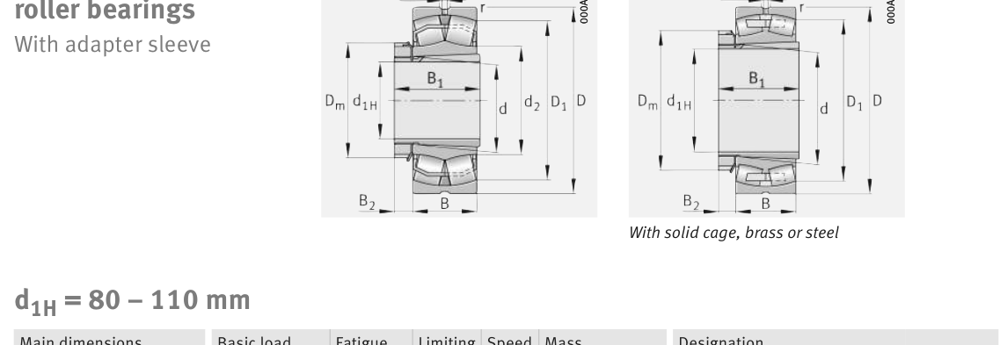

Original catalogue drawing - FAG Schaeffler HR 1, page 758

Scanned from the manufacturer catalogue page listing this part number. All part numbers printed on that table share the same drawing.
Scale cross-section
Blue = inner / outer ring, yellow = rolling element. Drawn to scale from this part's own
dimensions for selection reference only - not a manufacturing or assembly drawing.
Dimension table (mm / inch)
Symbol
Dimension
mm
inch
d
Bore diameter
120
4.7244
D
Outside diameter
180
7.0866
B
Inner-ring / bearing width
46
1.811
r
Chamfer (min)
2
0.0787
Notes
Weights are given in kg. Load ratings are shown in both the original catalogue units and the converted value (1 N = 0.2248 lbf). Data is provided for selection reference only - confirm against the latest official catalogue before ordering.
Main dimensions
Bore d (mm)
120
Outside dia. D (mm)
180
Width B (mm)
46
Inner-ring shoulder dia. D1 (mm)
164.7
Load ratings & speeds
Basic dynamic load rating Cr (lbs)
96668
Basic static load rating Cor (lbs)
130389
Basic dynamic load rating Cr (N)
430000
Basic static load rating C0r (N)
580000
Fatigue limit load Cur (N)
58000
Factor e
0.22
Factor Y0
2.97
Limiting speed nG (rpm)
3,950
Reference speed nB (rpm)
2,800
Weight
Weight (kg)
4.1
Mounting dimensions (fillets / shoulders)
Housing fillet r max (mm)
2
Shaft shoulder da (mm)
128.8
Shaft shoulder db (mm)
127
Housing shoulder Da (mm)
171.2
Housing fillet ra max (mm)
2
Bearing life (ISO 281 basic rating life)
C / P
Equivalent load P (N)
L10 (106 rev)
L10h at 1,300 rpm
4
107,500
102
1,302
6
71,667
392
5,032
8
53,750
1,024
13,128
10
43,000
2,154
27,621
15
28,667
8,323
106,711
Basic rating life per ISO 281: L10 = (C/P)10/3 with C = 430,000 N. Hours = L10 x 106 / (60n). Life-modification factors for lubrication, contamination and temperature (aISO) are not included.
Source & traceability
Brand
FAG
Source catalogue
FAG / Schaeffler Rolling Bearings HR 1
Catalogue page
p.758 (dimensions)
Load ratings in newtons, fatigue limit load Cur, limiting speed nG and reference speed nB.
Send us the quantity you need and we will come back with price and
lead time, normally within 24 hours. Equivalent parts from other brands can be quoted at the same time.